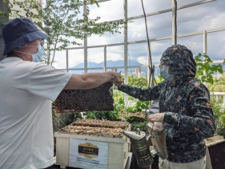
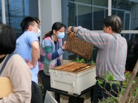
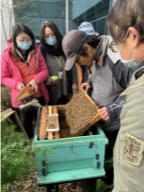
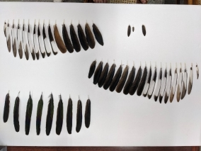

No. 189.9 森林系小行星
★療癒生活中的綠意
▲901-01 專題演講✕工作坊
主題：療癒生活中的綠意
時間：11月06日 週六 13:30-17:30
地點：9F 東側走廊
費用：每人200元
人數：30人(需操作手杖，建議身高130cm以上)
近年來也可以發現有越來越多的人往山裡走，不論是露營、爬山、健行或是單純在周末往山裡走走轉換心情。在這個現象之下，本次講座邀請國立臺灣大學園藝暨景觀學系張育森教授和森林環境暨資源學系余家斌副教授來和大家分享生活中的綠意，以及我們可以如何親近這些可以帶給我們身心健康和療癒感的植栽！
流程：
13:30-13:40 開場
13:40-14:40 【樹木的人生哲理】/臺灣大學園藝暨景觀學系張育森老師
當我們因不同因素而不能走入森林或山中時，其實轉身也能發現生活中有不同的植栽和樹木。運用室內導覽常見樹木的特性、故事和生存智慧，讓參與者體會其之間的人生哲理，以及和健康園藝樂活養生之間的連結。短講也搭配工作坊，由張教授的團隊帶領參與者體驗製作苔球，在生活中增添綠意。
14:40-15:40 【森林療癒，從森林找到健康】/臺灣大學森林環境暨資源學系余家斌老師
隨著越來越多人選擇在閒暇時間往森林走，不論是去健行、與朋友相約帶著簡單食物去野餐、或是露營，都可以發現我們似乎挪了越來越多時間在樹木和森林中遊走。林務局也在近年來推行森林療癒師認證培訓平台，身為秘書長的余家斌老師也將在這場短講中分享森林如何療癒我們，並且於短講結束後邀請林士懿老師帶領參與者體驗能夠在森林中從事的北歐式健走，期待未來在走入森林裡時能夠多一項對身心皆健康的活動。
15:40-16:20 工作坊A：
將參與者分為兩組，一組先參加由張老師帶領的「苔球」；另一組參與者則是先參加林士懿老師帶領的「北歐式健走」團
16:20-17:00 工作坊B：
於工作坊A時間到後，將工作坊A的兩組參與者對換，原先參加張老師手作工作坊的參與者交換體驗林士懿老師的健走團；先參加健走團者輪到體驗手作工作坊
17:00-17:30 Q&A問答
★自然災害震體驗
▲901-02工作坊
主題：安全耐震我的家－居家實驗微體驗
時間：每場30分鐘
地點：9F 東側走廊
場次：11月7日 10:00場、10:30場
人數：16組親子(2人一組)，建議8歲以上孩童參加
費用：每組250元
活動單位： 成大土木✕小史塔克實驗室
介紹：
哇！我們把百萬級的大學實驗縮小到你家了！在一般實驗室，關於材料力學、建築工程的實驗都非常巨大，一般人難以接觸，但現在成大土木系劉光晏副教授與小史塔克實驗室共同合作開發了一般人也能輕鬆操作的居家實驗教具！趕快來報名體驗看看喔！
★魔法世界的自然法則
▲901-03工作坊
主題：標本魔法世界工作坊
時間：每場90分鐘(15分課程說明、60分鐘體驗，15分學習單)
場次：11月7日 13:30場、15:30場
地點：9F 東側走廊
人數：每場30人
費用：免費(建議10-14歲報名參加；報名參加者於報到時，請持當日有效常設展票券或有效會員卡報到參加)
單位：國立臺灣大學動物博物館、植物標本館
介紹：
透過與標本的親密接觸，引發學習興趣，透過多元的活動，了解大自然的奧秘。
第一場 水晶球果實之秘
11月7日 13:30-15:00
透過果實標本認識果實多樣性及傳播方式。
第二場 食物的故事
11月7日 15:30-17:00
透過動物吃不同食物，牙齒、嘴喙會有不同的形狀演變，了解大自然演化的概念。
Sky booths：來到養蜂人的家
902-01主題攤位
主題：城市養蜂 Urban Beekeeping
時間：11月7日 10:00-17:30
地點：9F 中央走廊
單位：城市養蜂
介紹：
城市養蜂 Urban Beekeeping 目的在推廣蜂類生態教育，並教導對蜜蜂養殖有興趣的朋友如何飼養東方蜂（野蜂）和西洋蜂，介紹寄生蜂、獨居蜂還有其他不同蜂類在自然界及農業上的角色及應用，也教大家製作「蜂旅舍」（Bee hotel），提供蜂類適合居住及繁殖的棲地，推廣生物多樣性。這些一點一滴的努力，目的就是希望與志同道合的朋友，一起從蜜蜂來關心我們居住的環境，讓民眾了解正確的蜜蜂知識，改善民眾對環境的態度，重視環境變遷。
  
Sky booths：標本師揭秘
902-02主題攤位
主題：野鳥標本大搜奇
時間：11月7日 10:00-17:30
地點：9F 中央走廊
單位：國立台灣大學動物博物館
介紹：
當野生動物不幸離世，他們所留下的軀體往往能告訴我們很多故事。想知道博物館中的野鳥標本背後隱藏著什麼秘密嗎?牠們因為哪些原因死亡?從牠們身上我們又能學到些什麼?這些標本又是怎麼製作出來的嗎?就讓我們一起從標本出發，揭開這些把美麗永留世間的老師們的神秘面紗吧!

Sky booths：Amazing都市叢林
902-03主題攤位
主題：Amazing都市叢林
時間：11月6-7日10:00-17:30，11月6日 18:30-21:00
地點：9F 中央走廊
單位：沈鴻濤建築師事務所、behet bondzio lin Architekten GmbH & Co.KG、太研規劃設計顧問有限公司、達觀規劃設計顧問有限公司、許智凱建築師事務所
介紹：
將科教館視為都市叢林中的一棵大樹，這棵大樹囊括了人們需要的生活空間、知識養分。藉由即將更新的地面下、樹梢、樹頂提供一個想像並展望未來世界。
Sky booths：森林邦
902-04主題攤位
主題：森林邦
時間：11月6-7日10:00-17:30，11月6日 18:30-21:00
地點：9F 中央走廊
單位：森林邦
介紹：
森林邦，緣起於對森林的熱愛與執著，基於過去所學，希望將森林的好傳達給大家，用實證的科學證據，讓大家實質感受森林的好，帶領大家走入森林，療癒身心。希望從水泥叢林逃脫出來，縱入森林的懷抱，進行自我的「微型解放」，儘管天候或許不可捉摸，山屋陋窳，但能躺在鬆軟的草地上，赤腳感受泥土的冰涼，呼吸著充滿樹木氣味的空氣，仰望著樹梢中撒下的暖陽。入夜後，更能獨享無垠的星空，看看那遠離繁華都市後，寂靜夜晚的顏色。一趟森林療癒，喚醒那來自森林家邦的呼喚，藉著大地之母，我們尋回最初的本能。
在這次科學節裡，給自己一小時，暫時放下煩心的事物，藉由手做過程，將專注力集中在嗅覺及觸覺，感受手中木筷的厚薄、紋理、香氣，讓森林帶你進入心流體驗~
藉由刺激小朋友的五感，提高孩童的創造力並訓練小朋友的專注力，歡迎大小朋友一同參與森林手作木筷的活動。
工作坊場次：
11/6(六)10:30-11:30、13:30-14:30、15:00-16:00、16:30-17:30、18:00-19:00、19:30-20:30
11/7(日)10:30-11:30、13:30-14:30、15:00-16:00
人數：每場12人 (現場報名)
工作坊時間：每場60分鐘
費用：300元
★Plus：一探博物館幕後典藏庫
903博物館幕後之旅 @9F典藏庫房
▲903 主題活動
活動名稱：一探博物館幕後
活動時間：每場20-30分
活動地點：9F 典藏庫房 (集合地點：9F西側電梯旁)
活動場次：
11月6日 10:30、11:30、16:00、17:30
11月7日 09:30、11:30、16:00、17:30
活動人數：每場10人，限16歲以上報名(請於報到時出示證件)
活動費用：每人50元
活動單位：科教館
介紹：
想知道博物館的典藏庫房收藏了哪些寶物嗎? 快來報名
庫房空間考量，僅提供報名者入場，陪同親友請於庫房外等候或報名參加。